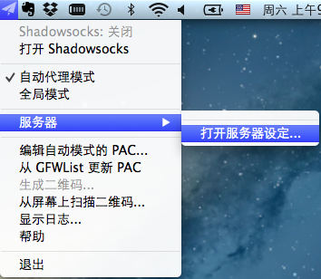
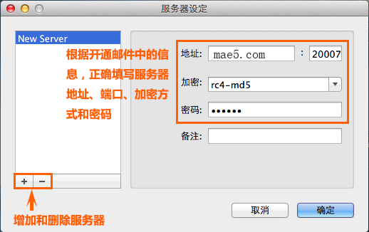
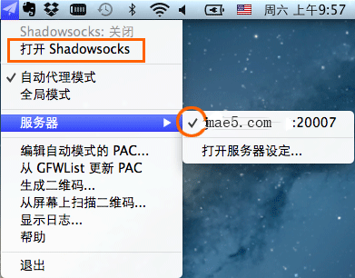
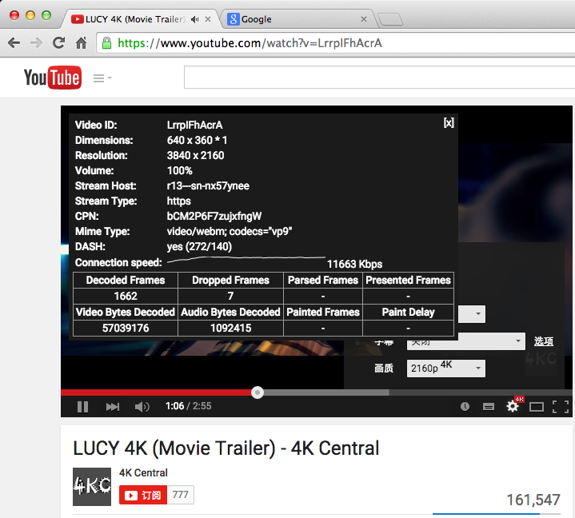

Macbook上使用影梭教程

Macbook
一、下载MAC OS X上的影梭软件
二、打开下载的dmg文件，将程序图标拖到右边的Applications，安装完成。

三、进入Launchpad，打开ShadowsocksX程序，程序图标出现在右上方，点击图标-“服务器”-“服务器设定”。

四、根据后台的帐号信息，填写服务器地址（IP或者域名）、端口、加密方式和密码，点确定。

五、选择刚刚配置好的服务器，点“打开影梭”，完成设置。

Safari或Chrome无需设置，开始科学上网
